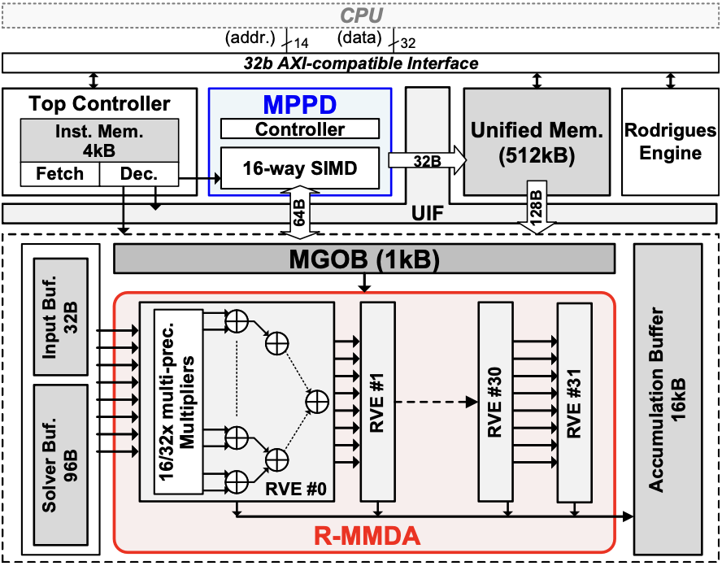

A Compact Energy-Efficient Unified Micro-Robotic Processor With Flexible Visual Perception
IEEE Journal of Solid-State Circuits (JSSC), 2026
bibtex
@article{11459814,
author={Zhang, Shuyuan and Wang, Yujin and Chen, Xizhu and Yang, Huazhong and Liu, Yongpan and Jia, Hongyang},
journal={IEEE Journal of Solid-State Circuits},
title={A Compact Energy-Efficient Unified Micro-Robotic Processor With Flexible Visual Perception},
year={2026},
pages={1-15},
doi={10.1109/JSSC.2026.3677826}
}